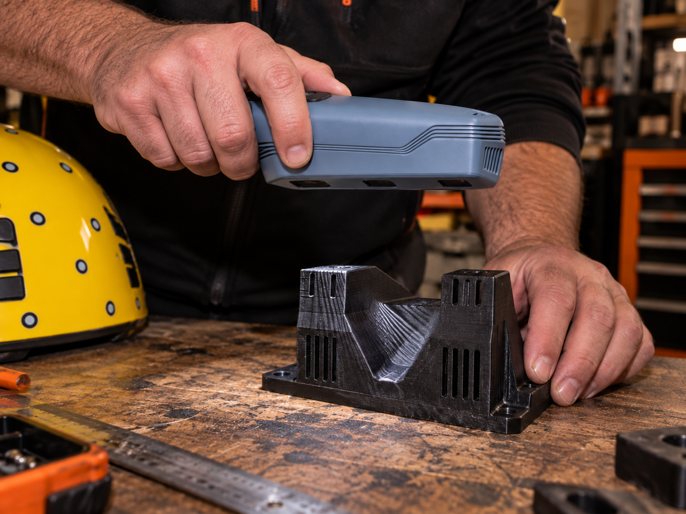
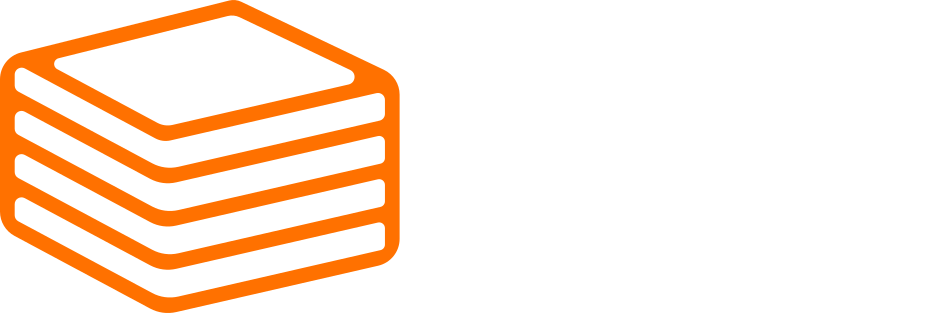
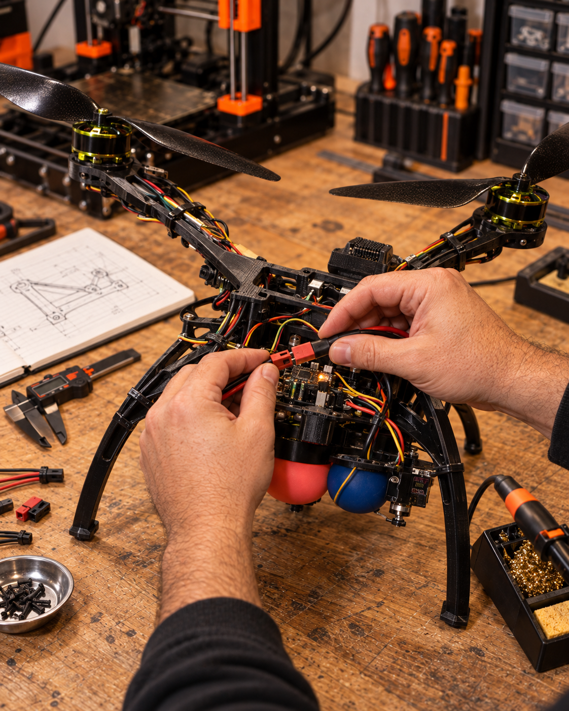
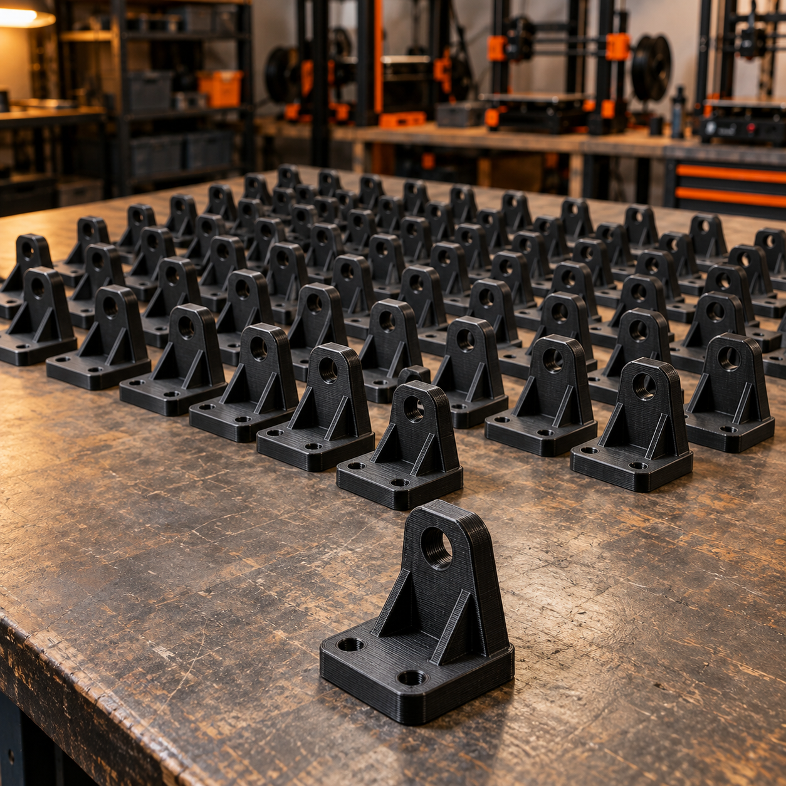
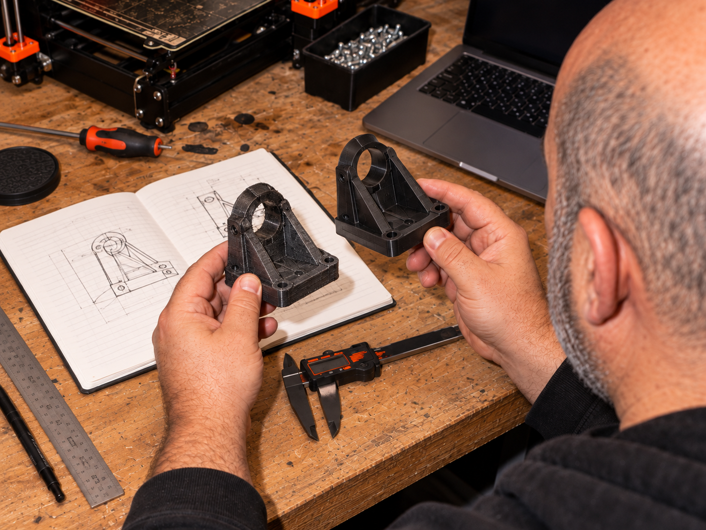

סריקה
תלת־ממדית.
המרת חלק קיים למודל דיגיטלי לצורך שחזור, התאמה, מדידה או המשך פיתוח.


לכל פרויקט יש שילוב אחר של תפקוד, צורה, כמות וגימור. אנחנו בוחנים את הצורך ואת המודל כדי להתאים תהליך ייצור שמשרת את התוצאה, ולא רק את הקובץ.
מעבר לבחירת חומר וטכנולוגיה, אנחנו מלווים את החלק מהמציאות הפיזית או מהרעיון — ועד לקובץ ולייצור.

המרת חלק קיים למודל דיגיטלי לצורך שחזור, התאמה, מדידה או המשך פיתוח.

מחלק בודד ועד סדרה קצרה, בטכנולוגיה ובחומר שמתאימים לתפקיד האמיתי שלו.

מעבר מהרעיון למודל, בדיקה פיזית ושיפור איטרטיבי עד שמגיעים לחלק שעובד.
שלחו קובץ, שרטוט, תמונה או תיאור קצר. נבדוק את הנתונים ונחזור עם הצעד הבא.